过去的「会思考」模型大多只在数学、代码等单一领域发力；开源社区一直缺少一个能在各种视觉任务上全面超越同体量「不思考」模型的多模态推理模型。
本文给出一个家族化答案 —— GLM-4.1V-9B-Thinking（9B）与 GLM-4.5V（106B 总参 / 12B 激活的 MoE）。核心配方是三段式：强基座预训练 → 长思维链冷启动 SFT → 课程采样强化学习（RLCS）。其中强化学习是真正「点石成金」的一步，把单一基座的能力在 STEM、视频、文档、定位、GUI 智能体等几十种任务上同时拉满。
结果：GLM-4.5V 在 42 个公开基准上几乎全部达到同体量开源 SOTA，在编码、GUI 智能体等硬任务上可与闭源的 Gemini-2.5-Flash 掰手腕；小小的 9B 版本也能在 29 个基准上击败大它 8 倍的 Qwen2.5-VL-72B。
问题是什么：多模态模型，缺的不是「看」，是「想」
视觉-语言模型早已不满足于「看图说话」。从解科学题到当自主智能体，真实任务对 VLM 的要求越来越偏向高级推理，而不仅仅是感知视觉内容。
在纯文本世界，「长链推理 + 可扩展强化学习」已经被反复证明能大幅提升大模型解决复杂问题的能力。很自然地，人们想把同一套范式搬到多模态上。但此前的尝试卡在两个地方：
- 只在窄领域见效：已有的多模态推理工作大多聚焦在某个特定领域（比如几何题），难以泛化成「通才」。
- 开源缺一个真正的通才：社区一直没有一个多模态推理模型，能在广泛的任务与场景上，稳定地超过同参数量级的传统「非思考」模型。
这篇报告要回答的，正是：如何用一套统一的、可扩展的训练框架，把一个 VLM 系统性地「教会推理」，并且让这种推理能力跨领域通用。
整体方案：一个家族、一套架构、三段式训练
本文不是单个模型，而是一个模型家族，共享同一套训练哲学 —— 围绕「全面增强推理能力」这一统一目标来组织预训练、监督微调与强化学习。
GLM-4.1V-9B-Thinking
90 亿参数稠密模型，语言塔用 GLM-4-9B-0414。小而强，可在多个基准上越级超越 72B 模型。
GLM-4.5V
106B 总参 / 12B 激活的 MoE，语言塔用 GLM-4.5-Air。原生支持「思考 / 非思考」双模式，在性能与效率间灵活权衡。
GLM-4.6V（家族新成员）
报告最新版本扩展出的开源模型，原生支持工具调用与 128K 长上下文，含 9B 的 GLM-4.6V-Flash。
共享架构：看清 → 对齐 → 推理
三个模型共用同一套「三件套」结构：一个视觉编码器（ViT）负责看，一个 MLP 适配器负责把视觉特征翻译成语言塔能读的 token，一个大语言模型（LLM）作为解码器负责想。它能以原生分辨率与宽高比感知图像和视频。
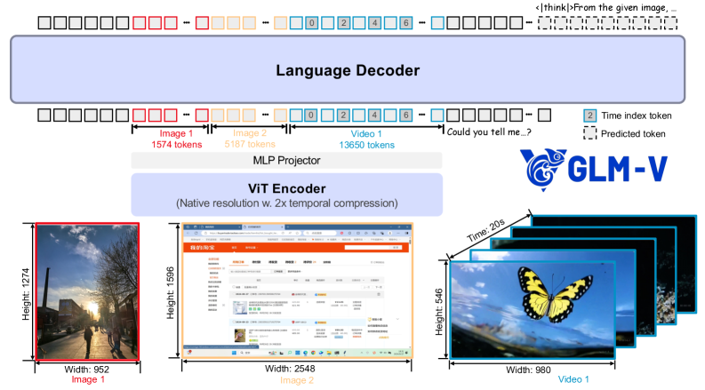
- ① ViT 视觉编码器：用 AIMv2-Huge 初始化，把图像/视频编码成视觉特征。借鉴 Qwen2-VL，把原来的 2D 卷积换成 3D 卷积，对视频做 2× 时间下采样以提效；单图则复制一份以保持一致。
- ② 任意分辨率适配：在 ViT 自注意力里加入 2D-RoPE，让模型能吃下极端宽高比（超过 200:1）或超高分辨率（4K 以上）的图；同时保留原始可学习的绝对位置编码，训练时用双三次插值动态适配到不同分辨率。
- ③ MLP 适配器（Projector）：把视觉特征投影、对齐到文本 token 空间，使图像与文字能在同一条序列里被统一处理。
- ④ LLM 语言解码器：GLM-4.1V / 4.6V-Flash 用 GLM-4-9B-0414，GLM-4.5V / 4.6V 用 GLM-4.5-Air。把 RoPE 扩展为 3D-RoPE，增强多模态空间理解，同时保住原有文本能力。
- ⑤ 视频时间索引 token：在每个视频帧后插入一个把时间戳编码成字符串的 token，显式告诉模型帧与帧之间的真实时间距离，从而提升时序理解与时间定位能力。
训练三段式：各司其职
预训练（Pre-training）
用海量、知识密集的多模态语料打造一个高潜力的视觉基座。作者强调：基座的上限，基本决定了最终结果的上限。
监督微调 / 冷启动（SFT）
用精心构造的长思维链数据，把基座「掰」成一个会按标准格式分步推理的模型——为强化学习做一个稳定的冷启动。
强化学习（RLCS）
课程采样强化学习，跨领域大规模训练，真正释放模型潜力——这是本文着墨最多、贡献最核心的一步。
预训练：先把基座的「天花板」垫高
作者反复强调一个朴素但关键的观点：预训练得到的基座有多强，基本就划定了强化学习之后的性能上限。所以这一步的核心是「数据」——又多、又广、又干净。
为此他们融合了多种数据，并训练纯文本以保住语言能力。整个语料覆盖六大类，每一类都配了专门的清洗/合成流水线：
图像 Caption
从 100 亿+ 图文对起步（LAION / DataComp / DFN / Wukong 等），经启发式过滤、CLIP-Score≥0.3 相关性过滤、概念均衡重采样，再用「事实导向重描述」提质。
交错图文
从网页与书籍中抽取真正的图文交错数据（MINT/MMC4/OmniCorpus + 1 亿+ 数字书），训练「高知识密度」分类器优先保留图表、示意图、地图等高信息量图像。
OCR
2.2 亿张图：合成文档图、自然场景文字（Paddle-OCR 抽框）、以及仿 Nougat 的 arXiv 论文「页面渲染 ↔ 结构化标记」配对。
Grounding 定位
自然图像用 GLIPv2 给名词短语自动配框，得到 4000 万高质量标注；GUI 域用 Playwright 抓网页 DOM 与渲染框，生成 1.4 亿+ 指代理解问答对。
视频
学术/网络/自有多源语料，人工细粒度标注复杂动作与画面文字，并标注镜头运动、构图等电影语言；多模态嵌入去重保证纯净。
指令微调
设计细粒度任务分类法做均衡采样，针对 GUI、长文档等薄弱场景做结构约束的合成增强，并做数据污染检查。最终约 5000 万样本。
一个关键小技巧：事实导向的「重描述」
网络抓来的原始 caption 往往充满噪声和幻觉。作者迭代训练了一个重描述（recaption）模型，专门给原始描述去噪、补全细节，但严格保留事实信息、不臆造，再把原始数据与重写数据按比例混合。
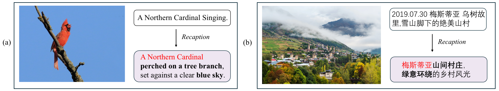
- 输入（左）：网络抓取的原始图文对，常带噪声、幻觉，或描述与图片对不上。
- 处理（中）：事实导向的重描述模型对原文去噪并补全细节。
- 输出（右）：新 caption 更精确、更详细，同时完整保留原文的事实知识，不引入新的错误。
- 训练方式：迭代训练这个重描述模型，再把原始数据与重写数据按预设比例混合，兼顾「世界知识广度」与「描述细节深度」。
预训练效果用 MathVista 非选择题子集的 pass@k 验证：GLM-4.1V-9B-Base 显著优于同规模的 SOTA 基座，为后续强化学习预留了更高的潜力空间。
冷启动 SFT：不灌新知识，只教「怎么想、怎么答」
SFT 在这里被定位成连接预训练与强化学习的桥梁，把一个普通 VLM 变成会做长思维链（CoT）推理的模型。
关键的认知差异在于：作者刻意不做短 CoT 的 SFT。他们认为 SFT 的角色不是注入新知识，而是把模型已有的视觉-语言理解，对齐到一种更有效的「思考 + 作答」风格上，从而给强化学习一个更稳、更强的冷启动。
- 数据构成：以可验证任务（如 STEM）为主，辅以开放式 VQA 等不可验证任务；中英为主、少量其它语言；用基座模型滤掉过易/过难样本，保持中等难度。
- 标准回答格式：每条回答都遵循
<think>（思考过程：反思、回溯、重试、验证）+<answer>（简洁完整的解答）结构。可验证题目的最终答案用特殊 token<|begin_of_box|>…<|end_of_box|>包裹，方便 RL 阶段精确抽取。 - 回答清洗：冷启动数据质量直接影响 RL 稳定性——构造不当会导致训练不稳甚至崩溃，因此严格清洗格式与混杂语言、冗余思路。
- 迭代增强：把 RL 检查点里采到的高质量推理样本回灌冷启动集，让模型见到更有用的推理模式，为下一轮 RL 打更强的底。
这一段的精髓：把「格式」和「推理风格」在冷启动阶段就学扎实，不要寄希望于在 RL 阶段才靠格式奖励去纠——否则格式奖励与正确性奖励混在一起，反而会把训练带不稳。
强化学习：什么很难、什么真的管用
这是全文的主角。作者用 RLVR（可验证奖励的强化学习）+ RLHF 的组合，在所有多模态领域上做大规模 RL —— STEM、定位、OCR、视频、GUI 智能体、图表与文档、逻辑推理、指令遵循等等。
他们把 RL 框架拆成四个相互依赖的组件，并坦言：每一层都有坑，任何一个维度失手，都可能让整个 RL 阶段效率骤降甚至崩溃。
① 数据准备
在每个子领域里尽量挑/造出「可被验证」的数据，做正确性校验、离线难度分级，并跑试点实验确认提升潜力。
② 奖励系统
RLVR 见效的关键。要在所有子领域都给出尽可能精确的奖励——一个统一又可按域定制的奖励系统。
③ 训练（RLCS）
课程采样、比例 EMA 动态扩样、更大 batch、丢掉 KL 与熵损失等一系列配方，追求有效、高效、稳定。
④ 基础设施
自研高性能、稳定的 RL 训练框架，支持各域定制 verifier、采样比例，并在采样/训练上做大量优化。
5.2 奖励系统：最脆弱、也最关键的一环
强化学习本质上是被奖励信号驱动的优化过程，所以奖励的精确与稳健压倒一切。作者发现一个反直觉的事实：虽然有研究说「即使随机/不完美的反馈有时也有益」，但当你训练的是一个横跨多种技能的统一 VLM 时——
任何单一能力的奖励信号有瑕疵，都可能让整个训练翻车。 实验里即便 STEM 子域的奖励质量很高，只要多图问答任务的奖励有缺陷，就足以拖垮所有领域、引发模型崩溃。
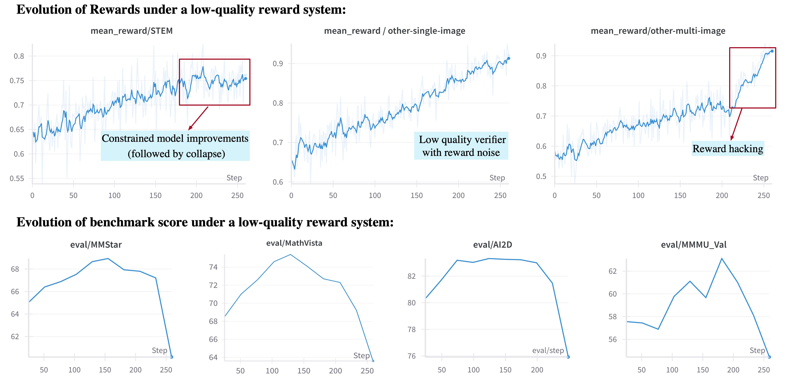
- 上排（训练奖励曲线）：STEM verifier 精调良好，但 other-single-image 与 other-multi-image 两个 verifier 没调到位。
- (a) 奖励噪声 @ 单图：模型微调输出把奖励刷上去，但真实准确率并没有提升——奖励信号被噪声污染。
- (b) 奖励作弊 @ 多图：模型学会用重复套路反复「骗过」verifier，奖励虚高，能力却没长进。
- 下排（评测指标）：第 150 步后 STEM 奖励增长停滞，整体多模态基准开始下滑，MMMU / MathVista / AI2D 急剧下降。
他们怎么把奖励做稳？
- 用专属 box token 抽取答案：放弃易混淆的
\boxed{}，改用词表里的特殊 token<|begin_of_box|>{答案}<|end_of_box|>，只比对框内内容。这样连 GUI 智能体那种「复杂函数调用」式答案也能被稳定解析。 - 防奖励作弊：粗糙的奖励设计会诱导模型走捷径。比如某个失当的 verifier 训练 500 步后被钻空子——计数题就答「0～10 之间一个合理的数」，相对论速度题就答「一个非常接近光速的值」，靠这些套话骗过基于 LLM 的奖励模型。
- 按域定制 verifier：最优 verifier 与任务强耦合——「43」与「43.0」在数学里等价，在 OCR 里却不等价。于是做成「共享校验函数 + 各域专属模块 + 单元测试」的分层奖励系统，并已开源。
表 1 · 部分领域的奖励设计
| 领域 | 规则 | 模型判定 | 奖励设计要点 |
|---|---|---|---|
| 数学 / 物理 / 化学 | ✓ | ✓ | 数值用 Sympy 带容差匹配；含物理/化学单位时改用 LLM 判定；其余精确匹配或 LLM 判定。 |
| 长文档 | ✓ | 用 LLM 做语义匹配。 | |
| 图表（Chart） | ✓ | ✓ | 数值类似数学（年份除外）；文本先精确匹配，再回退 LLM 判定。 |
| OCR | ✓ | 用编辑距离：reward = 1 − d_edit(ans, gt) / max(|ans|,|gt|)。 | |
| 视觉定位 Grounding | ✓ | reward = IoU>τ 的框数 ÷ 总框数。 | |
| GUI 智能体 | ✓ | ✓ | 动作预测：动作 + IoU；定位：IoU；问答：精确或语义匹配。 |
| 通用 VQA / 空间 | ✓ | ✓ | 先用 Sympy 精确匹配，失败再回退模型判定。 |
5.3 RLCS：用「课程采样」把算力花在刀刃上
RL 训练有个绕不开的矛盾：随着模型变强，越来越多样本变得太简单，提供不了有用梯度。在 GRPO 里，一个 rollout batch 如果全对（或全错），梯度直接为零。作者的试点实验里，仅 200 步后就有超过一半的题目准确率超过 90%；而 rollout 又是训练时间的主要瓶颈。
于是他们提出 RLCS（带课程采样的强化学习）：把课程学习的思想用到在线采样上，让训练样本的难度动态匹配模型当前的能力。
- 离线难度分级：训练前用多个成熟 VLM（或更早的 RL 检查点）跑全量
pass@k，再融合人工难度标注，把数据切成「很易 → 很难」的多个档位。 - 在线难度分级：训练中对每个 rollout 记录 pass@k 结果，实时映射到难度档并与离线标签合并，这也顺带反映了模型当前水平。
- 动态重加权：按迭代粒度不断调整各难度档的采样比例——少采太简单和当前太难的，重点喂「中等偏难、收益最大」的那批。经验上 RLCS 能显著加速提升、稳定带来收益。
5.3.1 提升「有效性」的几招
- 更大的 batch size：混合多域数据时，较大的 batch 在长期能换来更高的性能天花板。
- 比例 EMA 动态扩样：去掉 KL 和熵损失后，全对/全错样本会浪费有效 batch。于是按
expansion_ratio = 1/(1 − 无效样本率)主动超额采样，并用其指数滑动平均（EMA）作为下一轮的超采系数，挑出难度最均衡的子集——既稳定又利于并行采样。 - 强制作答（Force answering）：思考太长被截断时，模型来不及给答案通常被判 0 分，但截断处的推理未必是错的。作者强制插入
</think>让模型先给出答案，给一个公平奖励——也让模型学会「想多久都能收尾」，便于测试时动态控制思考预算。 - 丢掉 KL 损失：VLM 的 KL 散度在 RL 中涨得比纯文本模型更快，但强行用 KL 损失压制反而明显束缚能力，于是移除。
- Clip-higher：抬高重要性采样比的上裁剪界，有助于改善 off-policy 表现并防止熵过快坍缩。
5.3.2 提升「稳定性」的几招
- 冷启动数据质量是生命线：如果冷启动数据里有大量无意义的思考路径，RL 会严重不稳甚至崩溃。务必把冷启动质量守在阈值之上。
- 去掉熵损失：为促多样性加熵损失，反而会让模型输出乱码、最终崩溃，因此移除。
- rollout 用 top-p = 1：与「调低 top-p 求稳」的常见做法相反，作者发现 top-p=1 能消除后期出现的乱码——猜想是它保证了全词表覆盖，避免罕见 token 学不到。虽引入更多随机性，却换来更稳更好的 RL。
- 逐样本（per-sample）算损失：与逐 token 相比，平均奖励没差别，但逐样本算损失训练更稳。
5.4 基础设施：让大规模 RL 跑得动、跑得稳
RL 的瓶颈在 rollout，而每条样本的长度事先未知（视频、长文档、难题的回答都可能极长）。作者在工程上做了几件关键事：
- DP 各 rank 序列长度负载均衡：rollout 后、分配训练样本前，把序列长度与计算量在数据并行的各 rank 间拉平，避免「最慢的 rank 拖垮整体」。
- 序列打包 + 梯度累积：把若干样本打包进固定长度（
context_length = 32K）的序列，按样本数加权平均各微步梯度，数学上等价于对整个 rollout batch 一次性算梯度。 - 样本重组打包：用高效启发式把所有样本压进尽可能少的微步里，实测把前反向时间砍掉一半。
有意思的发现：各领域不是「内卷」，而是「互相成就」
一个核心问题：跨多领域 RL 时，不同模态任务到底是会互相促进，还是互相干扰？作者在 GLM-4.1V-9B-Thinking 上做了一组干净的对照实验。
他们选了四个代表性领域（STEM、OCR&Chart、Grounding、GUI Agent）做单独训练，再加一个把四者混合的 Mix-all，然后在五类基准（含一个没有训练集的通用 VQA）上评测。
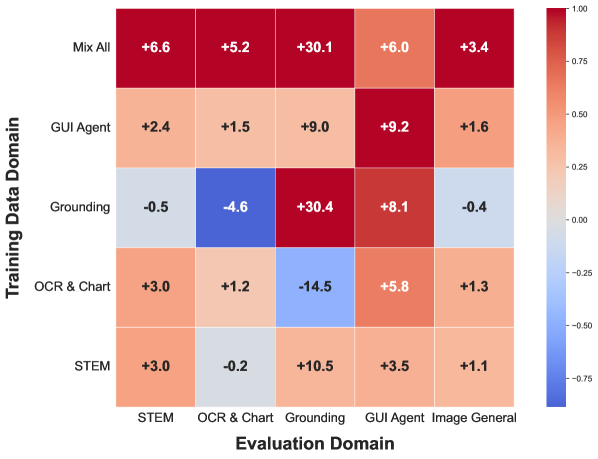
- 怎么读：行 = 训练数据领域，列 = 评测领域；格子数值 = 相对 SFT 起点的平均提升（负值即下降），颜色按每列归一化。
- 单域也能正迁移：只练 STEM，也能提升视觉定位、GUI 交互和通用 VQA；只练 OCR&Chart，也能带动 STEM、GUI 与通用 VQA。说明视觉理解、文字识别、推理这些底层能力是被「共同激活」的。
- GUI 是「全能催化剂」：只练 GUI 智能体任务，几乎提升所有领域——因为 GUI 本身就要求识字 + 定位 + 逻辑推理的综合能力。
- 混合训练更强：Mix-all 在 STEM、OCR&Chart、通用 VQA 三项上优于任何单域训练；但 grounding / GUI 未必更好，提示这两类可能需要更有针对性的策略。
- 任务亲缘关系：GUI 与 grounding 互相显著促进（共享定位能力）；OCR&Chart 与 GUI 互相促进（共享文字识别）。
跨域泛化与互促
在一个领域上训练能提升其它领域；联合训练在各领域收益更大。
动态选题至关重要
动态挑出「最有信息量、难度适中」的题去 rollout，对效率与性能都关键——这正是 RLCS 与比例 EMA 的初衷。
冷启动分高≠RL 潜力大
冷启动从 1000 步加到 2000 步虽多 2 分，但 RL 后两者收敛到几乎相同峰值——同等潜力的基座能被 RL 拉到同一高度。
RL 比 SFT 更少「领域互扰」
与训练领域正交、未训练的能力能被较好保留，跨域泛化也频繁出现。
实验结论：同体量开源 SOTA，硬任务对标闭源
在横跨 42 个公开基准的评测中，GLM-4.5V 在几乎所有任务上拿下同体量开源 SOTA，并在编码、GUI 智能体等挑战性任务上与闭源的 Gemini-2.5-Flash 相当甚至更优。下面是几个有代表性的关键数字（数值取自论文表 2）。
几项硬指标（GLM-4.5V，思考模式）
它到底能做什么：能力实例画廊
「Versatile（多才多艺）」不是口号。下面这组论文里的真实案例，覆盖了它瞄准的主要任务谱系——从 GUI 操作、地理定位，到数学、定位、视频与前端编码。每张图都可展开看说明。
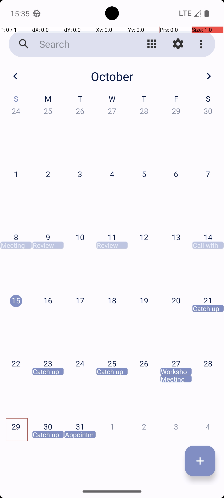
- 模型读懂屏幕布局与控件，理解任务目标，逐步规划并预测点击/输入等动作。
- 这要求识字 + 定位 + 真实世界知识 + 动态决策的综合能力。
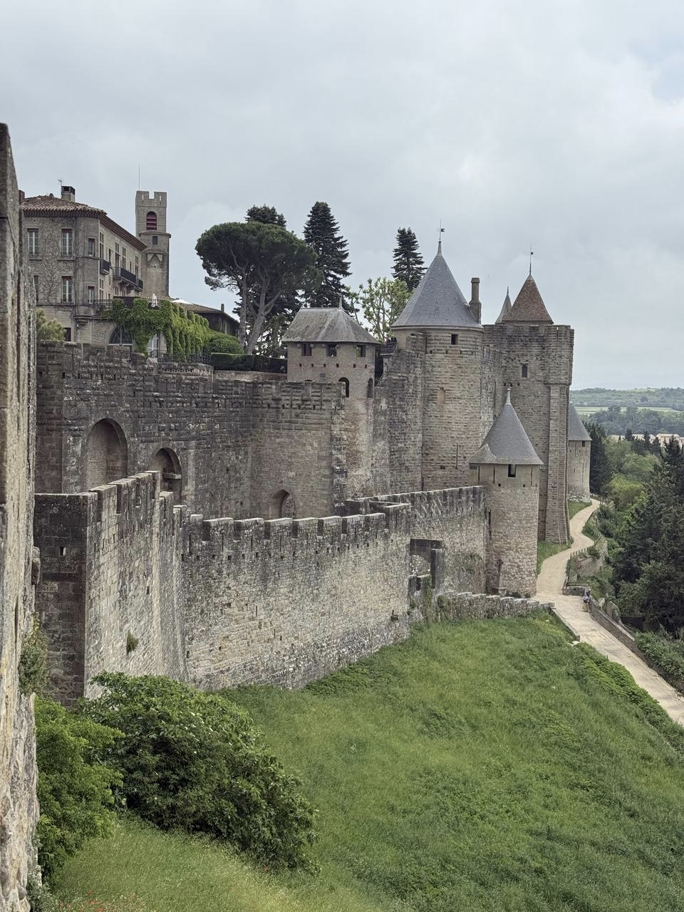
- 模型从招牌文字、植被、建筑风格、车牌、路标等线索做联合推理。
- 把视觉感知与世界知识结合，给出有依据的地点判断。
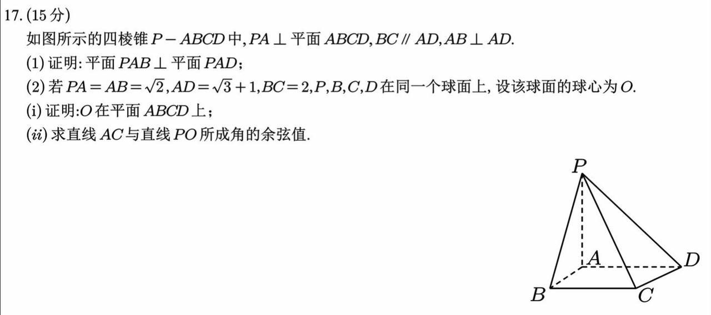
- 读图中的题面与图形，建立坐标/方程，分步推导并验算。
- 最终答案用 box token 包裹，便于 RL 阶段精确判分。
- 把自然语言指代映射到像素级位置，输出归一化坐标框。
- 奖励按 IoU>τ 的命中比例给出，驱动精确定位。
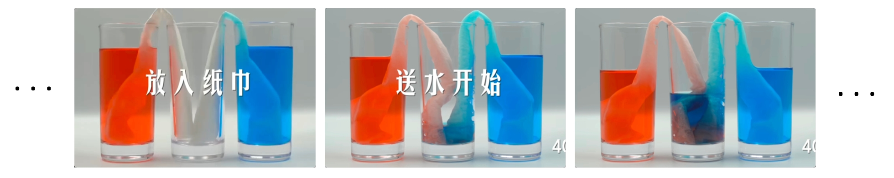
- 借助每帧后的时间索引 token 理解时序，定位关键时刻。
- 结合画面内容与背景知识做跨帧推理。
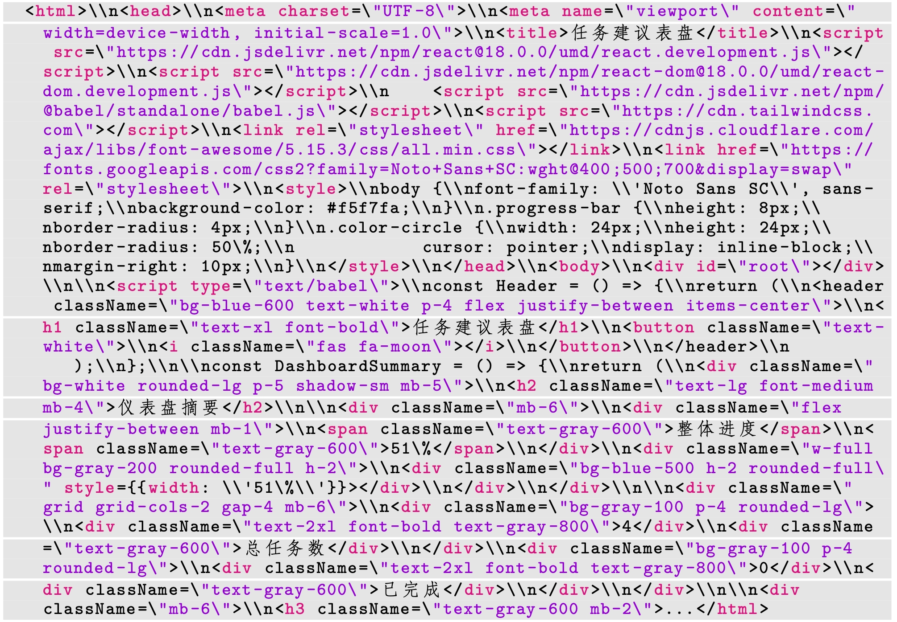
- 解析界面的布局、组件与层级，生成可运行的前端代码。
- 需要精确的视觉感知 + 结构化代码生成能力。
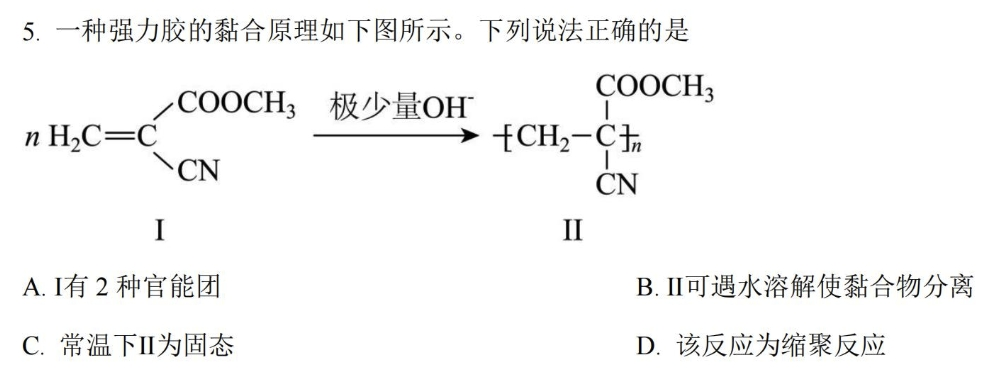
- 识别图中的化学式/结构与题意，结合学科知识推理。
- 含化学单位时奖励改用 LLM 判定，避免误判等价答案。
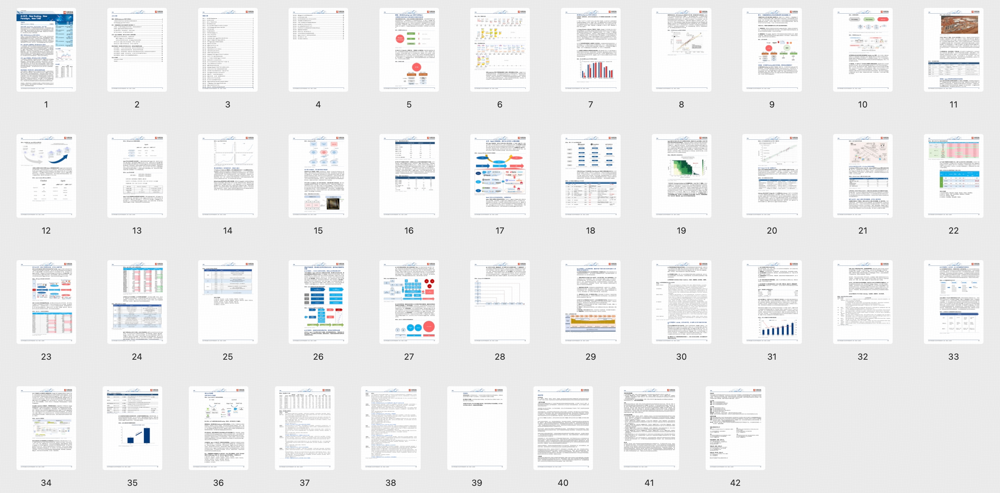
- 在长上下文里定位关键信息并跨页整合。
- 奖励用 LLM 做语义匹配评估。
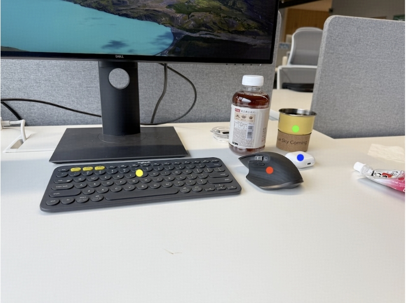
- 理解物体的相对位置、视角与三维关系并据此推理。
- 对杂乱/遮挡场景尤其考验感知与推理的协同。
局限与未来：奖励「结果对」，不代表「过程对」
作者难得地坦诚列出了仍然存在的短板，这些也是多模态推理的下一步方向：
- RL 提升完成率，未必提升推理质量：模型有时「答案对、过程错」。因为现有奖励模型大多只看最终结果，不验证中间步骤——错误甚至幻觉的推理链，只要蒙对答案就可能被强化。
- RL 训练仍可能不稳：早期实验里设置的微小改动就会带来推理深度/风格的大幅波动；虽经改进趋稳，但大规模 RL 优化的深层挑战依然存在。
- 复杂场景仍会翻车：杂乱、遮挡、细节模糊的图像会引发感知错误，进而拖累推理——感知与推理必须同步提升。
此外作者也对一个方向充满兴趣：多模态训练能否反哺纯文本推理（例如「看代码截图做题」是否能提升纯文本编码能力）。同时，随着模型变强，评测基准也需进化得更有挑战性、更能诊断「捷径推理」与「幻觉」等失败模式。